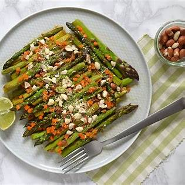
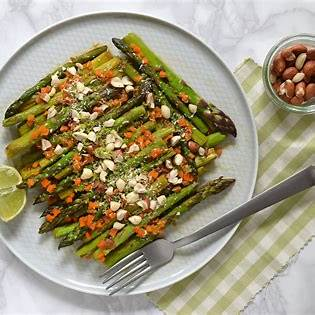
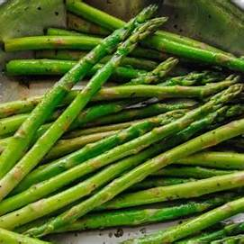
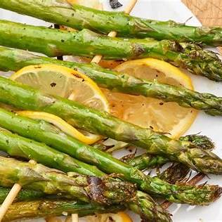
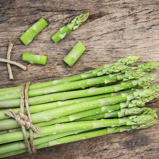

Ricos en prebióticos
Los espárragos contienen inulina, una fibra prebiótica que alimenta las bacterias buenas del intestino, contribuyendo a un microbioma saludable y reduciendo la inflamación intestinal.
Basado en el artículo de The New York Times publicado en Infobae
Los espárragos contienen inulina, una fibra prebiótica que alimenta las bacterias buenas del intestino, contribuyendo a un microbioma saludable y reduciendo la inflamación intestinal.
Son una buena fuente de luteína y zeaxantina, antioxidantes que ayudan a proteger la mácula del ojo, reduciendo el riesgo de degeneración macular asociada a la edad.
Seis espárragos aportan aproximadamente 40 microgramos de vitamina K, esencial para la coagulación sanguínea y la salud ósea.
Para maximizar la biodisponibilidad de sus nutrientes, se recomienda cocerlos al vapor o asarlos, evitando hervirlos para no perder vitaminas en el agua.
